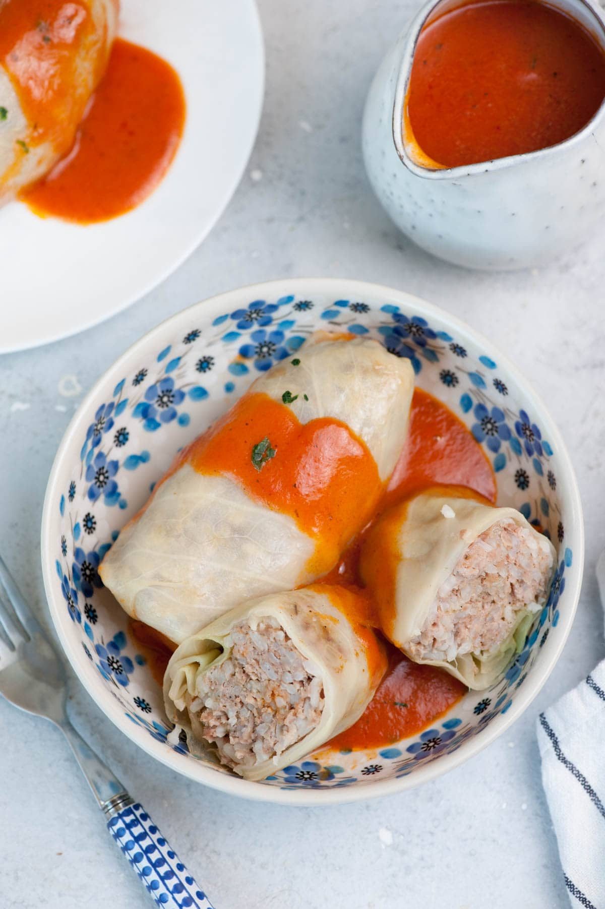

Gołąbki

Cabbage leaves are stuffed with ground beef, rice, then simmered in tomato
soup. Works great in the oven or a slow cooker. Serve with pan juices and a
drizzle of sour cream, or mix the pan juices with sour cream and ladle it
over the cabbage rolls. Also, good with mashed potatoes and cucumber and
sour cream salad. Cabbage rolls freeze well before or after cooking.
Ingredients
- 1 head cabbage, cored
- 2 tablespoons butter
- 1 large onion, chopped
- 1 pound ground beef
- ½ pound ground pork
- 1½ cups cooked rice
- 1 teaspoon finely chopped garlic
- 1 teaspoon salt, plus more to taste
- ¼ teaspoon ground black pepper, plus more to taste
- 3 (10.75 ounce) cans condensed tomato soup
- 2 (12 fluid ounce) cans tomato juice, or more to taste
- ½ cup ketchup
Steps
- Bring a large pot of lightly salted water to a boil. Place
cabbage head into water, cover pot, and cook until cabbage leaves are
slightly softened enough to remove from head, 3 minutes. Remove cabbage
from pot and let cabbage sit until leaves are cool enough to handle,
about 10 minutes.
- Remove 18 whole leaves from the cabbage head, cutting out any thick tough
center ribs. Set whole leaves aside. Chop the remainder of the cabbage
head and spread it in the bottom of a casserole dish.
- Melt butter in a large skillet over medium-high heat. Cook and stir
onion in hot butter until tender, 5 to 10 minutes. Cool.
- Stir onion, beef, pork, rice, garlic, 1 teaspoon salt, and 1/4 teaspoon
pepper together in a large bowl.
- Preheat oven to 350 degrees F (175 degrees C).
- Place about 1/2 cup beef mixture on a cabbage leaf. Roll cabbage around
beef mixture, tucking in sides to create an envelope around the meat. Repeat
with remaining leaves and meat mixture. Place cabbage rolls in a layer atop
the chopped cabbage in the casserole dish; season rolls with salt and
black pepper.
- Whisk tomato soup, tomato juice, and ketchup together in a bowl. Pour
tomato soup mixture over cabbage rolls and cover dish wish aluminum
foil.
- Bake in the preheated oven until cabbage is tender and meat is cooked through,
about 1 hour.